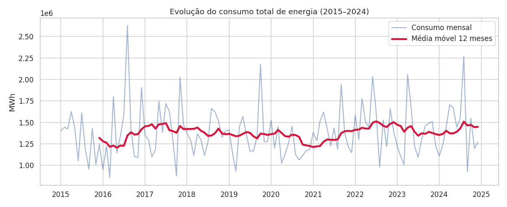
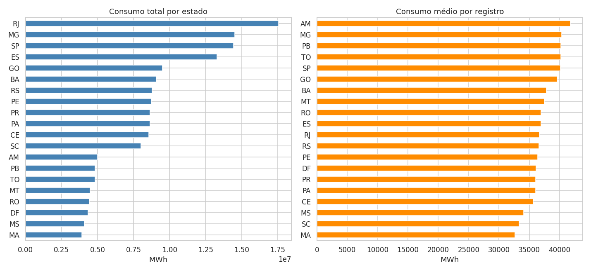
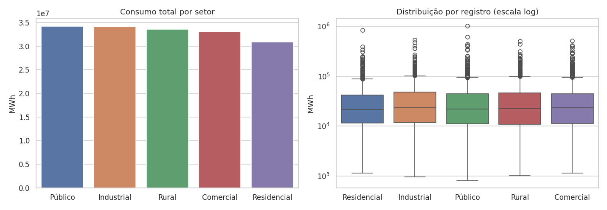
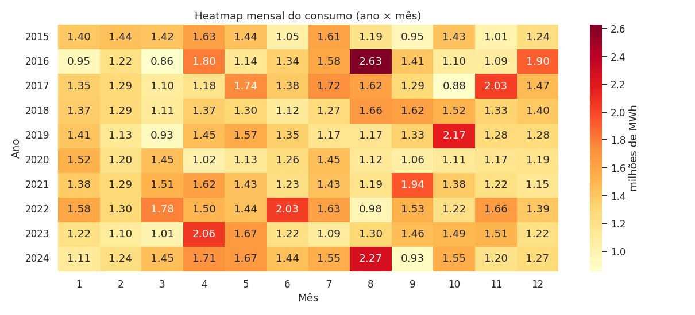
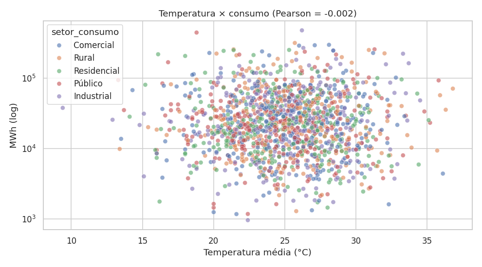
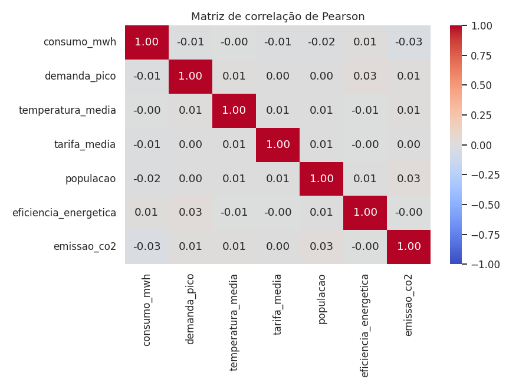

Problema
O consumo de energia reflete atividade econômica, crescimento urbano e eficiência. Entender padrões de demanda, sazonalidade e picos ajuda a antecipar riscos de sobrecarga do sistema elétrico. O projeto responde: quais estados e setores consomem mais? O consumo cresceu? Há sazonalidade? A temperatura explica o consumo?
Base de dados
4.440registros
14colunas
20estados
5setores de consumo
2015–2024período
≈ 165,7 mi MWhconsumo total
Dataset simulado fornecido pelo professor.
Tecnologias
Python · Pandas · NumPy · Plotly · Matplotlib · Seaborn · Streamlit · GitHub / GitHub Pages / Streamlit Community Cloud
Principais gráficos






Conclusão
- O consumo anual oscila (queda em 2020 e recuperação depois) e é bem distribuído entre os setores.
- Não há sazonalidade estável nem relação entre temperatura e consumo nesta base.
- Cerca de 25% dos registros estão em nível de demanda Crítico — pontos de atenção para o sistema.
Limitação: a base é simulada e desbalanceada entre estados; ausência de correlações é um resultado esperado e não deve ser extrapolada para o sistema elétrico real.